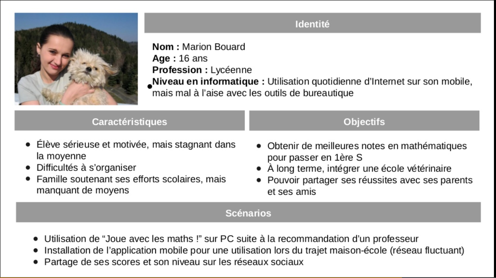
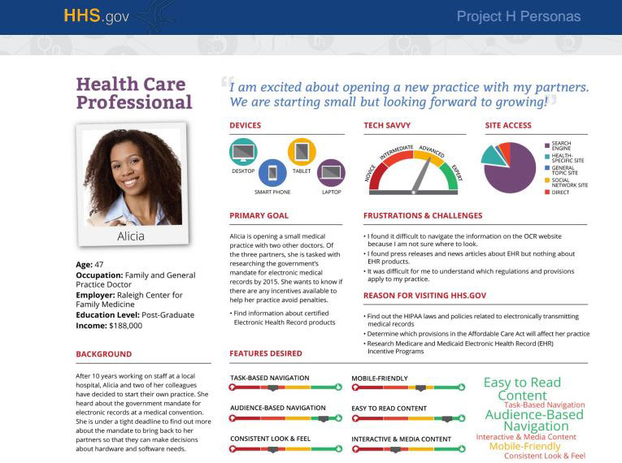
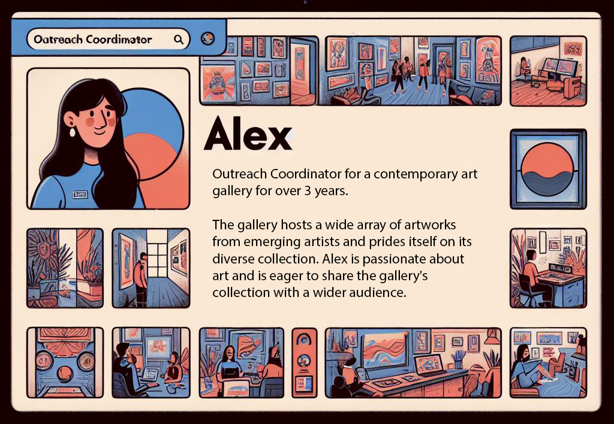

Persona card
About
A persona card is a composite user profile built from qualitative and quantitative research. It gives a named, humanized face to a user segment — including a representative photo or illustration, a short biographical sketch, their primary goals, their key frustrations, and their characteristic behaviors relevant to the design context. The card is a communication device: it makes an abstract user segment concrete enough to argue about, to design for, and to keep in mind across months of a project. Research-grounded personas prevent teams from designing for themselves.
When to use
Use persona cards after synthesis to anchor design decisions in real user types. They are most valuable in team settings where not everyone has had direct research contact with users, and in projects long enough that the research risks fading from memory. Personas also work as presentation tools for stakeholders who need to understand who the product serves before evaluating design decisions.
When not to use
Do not create personas from assumptions or demographic data alone — these are stereotypes, not research artifacts. Avoid creating so many personas (more than 4–5) that the team cannot keep them distinct. Proto-personas (assumption-based) should be labeled clearly as provisional and replaced as soon as real research is available.
References
Examples
Click any example to view full size and visit the original source.




